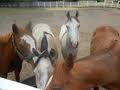
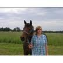
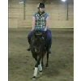
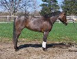
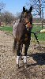
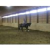
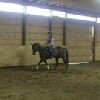
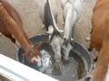

Remember when you thought high school was like hell. Got teased, made fun of, and barely made it through the day. Heck! It has been ten years, why do you remember all that crap anyways? Your idea of fun was sitting in your room alone with your laptop on your bed. A good vacation meant cleaning stalls, riding, and playing Zelda. The perfect snack was a cold Arnold Palmer and a bag of Act II Movie Theatre Butter popcorn. Life was not horrible, but man, you were not doing so hot near the end of it. You wrote this the day after a emotional break down. You did not want to get up, but you did. Went to school, just to get harshly called an idiot for an innocent opinion. Yeah, that is teenagers for you... Judgemental, egocentric, and overall jerks.
Yet during it all, you had some really good times too. You had Rittz during your junior year. Yes, he was a crazy nut-case.However, he got you through one year of school. That same summer you got your horse (totally a pony), Pocos Classy Sunsue aka Classy. All through your junior year and some of senior year you could not canter her to save your life. This past weekend, November 26, 2011. You did it. Not a hint of fearin you anymore, just pure will. You were about to move in with your dad and Cindy. The house is huge, too good to be true... I hope you still live there (well at least they do, you should have your own place by now). Done with college too, huh? Lucky you, I am barely getting there.
Secretely, I hope you never find anyone. You are better off without them... You are such a free spirit. You need to be out in the open and isolated. It is true you know, I know you better than you. It may not make sense now, but I can tell you every one of your secret weak spots, things that drive you crazy, things you love... Relationships set you up for a bunch of crap. Even when you had a good one with no problems, you could not handle being tied to someone else. Be free, for once in your life. Go, go out and do things. Travel the world. Revisit Thailand and REMEMBER. You never did have a good memory.. Always forgetting stuff... Forgetting really important things.
Your promise ring, do you still wear it? It was the last thing you got from them both before mom and dad got divorced. It was on your thirteenth birthday, at P.F. Changs. How is Classy? Give her a good grooming for me. I often miss her, being so far away.. Friends? Do you have many? If not, who cares! you never really did, and you were still very happy. You are very different from many people--never forget it. Even when no one understands you, you are not alone. You have Dad, Mom, Cindy, and especially Classy.
Do not even dare forget our goal. To help people and horses all in one. Equine Assisted Psychotherapy.If you have forgotten it, REMEMBER it. Horses were the only one who kept you sane all through your life. It is time with you to share that with othe broken teens. Teens who are broken, struggling, and about to give up. Save them. You will save yourself in doing so.
Not much else for me to say really... Maybe you will never actually read this. You never were the type to go to reunions and stuff like that. With that said.. Good luck! Go live life and regret nothing!
|  |  |  |  |  |  |  |  |